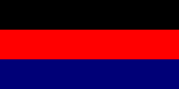

REPUBLIC OF UGANDA
"For God and My Country"
First Republic (1963–1971)
FIRST PRESIDENT
- Kabaka Mutesa ll
- Political Party: Kabaka Yekka
- In Office From: 9 October 1963.
- In Office Until: 25 May 1966 [Deposed in a Coup].
- Born: 19 November 1924.
- Died: 21 November 1969.
- Aged: 45 Years Old.
SECOND PRESIDENT

- Apollo Milton Obote
- Political Party: U.P.C.
- In Office From: 15 April 1966.
- In Office Until: 25 January 1971 [Deposed in a Coup].
- Born: 28 December 1925.
- Died: 10 October 2005.
- Aged: 79 Years Old.
Second Republic (1971–1979)
THIRD PRESIDENT


- Idi Amin Dada Oumee
- Political Party: Military Dictator
- In Office From: 25 January 1971.
- In Office Until: 11 April 1979 [Deposed in a Coup].
- Born: ?- ?- 1925.
- Died: 16 August 2003.
- Aged: 77-78 Years Old.
Third Republic (1979–1985)
FOURTH PRESIDENT
- Yusuf Kironde Lule
- Political Party: Military Dictator
- In Office From: 13 April 1979.
- In Office Until: 20 June 1979.
- Born: 10 April 1912.
- Died: 21 January 1985.
- Aged: 72 Years Old.
FIFTH PRESIDENT
- Godfrey Lukongwa Binaisa
- Political Party: U.P.C.
- In Office From: 20 June 1979.
- In Office Until: 12 May 1980.
- Born: 30 May 1920.
- Died: 5 August 2010.
- Aged: 90 Years Old.
SIXTH PRESIDENT
- Paulo Muwanga
- Political Party: Uganda People's Congress
- In Office From: 12 May 1980.
- In Office Until: 22 May 1980.
- Born: 4 April 1924.
- Died: 1 April 1991.
- Aged: 66 Years Old.
Presidential Commission
National Resistance Army
- Godfrey Binaisa; Paulo Muwanga; Yoweri Museven; Oyite-Ojok; Tito Okello; Zeddy Maruru; Willium Omaria; Steven Kashaka; Joram Mugume; Pecos Kuteesa; Smith Open Acak. Presidential Commission of Uganda
- Saulo Musoke; Polycarp Nyamuchoncho; Yoweri Hunter Wacha-Olwol; Milton Obote Time Span
- Political Party: P.C.U.
- In Office From: 22 May 1980.
- In Office until: 15 December 1980.
Second Time As President
- Apollo Milton Obote
- Political Party: U.P.C.
- In Office From: 17 December 1980.
- In Office Until: 27 July 1985.
- Born: 28 December 1925.
- Died: 10 October 2005.
- Aged: 79 Years Old.
Military rule (1985–1986)
SEVETH PRESIDENT
- Bazilio Olara-Okello.
- Political Party: Military Leader
- In Office From: 27 January 1985.
- In Office Until: 29 July 1985.
- Born: ?- ?- 1929.
- Died: 9 January 1990.
- Aged: 60-61 Years Old.
EIGHTH PRESIDENT
- Tito Lutwa Okello.
- Political Party: M.M.D.
- In Office From: 29 July 2985.
- In Office Until: 26 January 1986.
- Born: ?- ?- 1914.
- Died: 3 June 1996.
- Aged: 81 Years Old.
Fourth Republic (1986–present)
NINETH PRESIDENT
Incumbent President
- Yoweli Kaguta Museveni
- Political Party: N.R.M.
- In Office From: 26 January 1986.
- In Office Until: Present.
- Born: 15 September 1944.
- Aged: 80 Years Old.